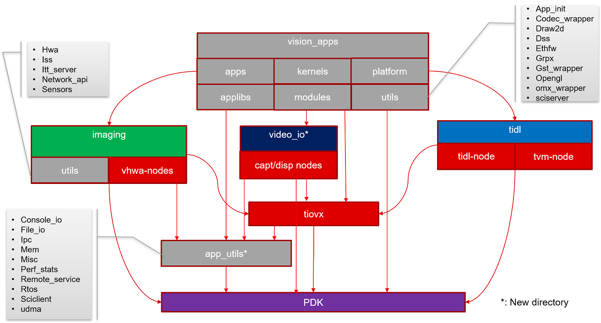

9.17. SDK 8.6 -> SDK 9.0 Migration Guide¶
There have been several changes introduced in the SDK 9.0. This document provides a migration guide for understanding these changes.
9.17.1. SDK 8.6 Component-Level Structure¶
The below diagram illustrates the structure of the SDK prior to 9.0. The Imaging, TIDL, TIOVX and vision apps components had several interdependencies due to the location of the utils and OpenVX extension nodes.
9.17.2. SDK 9.0 Component-Level Structure¶
In order to decouple these interdependencies, the SDK was restructured in 9.0 as per the following diagram.

A summary of these changes are provided below.
The nodes which correspond to a given component were split out from TIOVX and moved into the corresponding component. For more information about these nodes and their API’s, please reference the user guide of the respective components.
The following VHWA nodes were moved into the “Imaging” component
VISS Node
MSC Nodes
LDC Nodes
NF Nodes
DOF Node
DOF Visualize Node
SDE Node
The TIDL and TVM nodes were moved into the “TIDL” component
A new component called “video_io” was created and the following nodes were moved into this component.
Capture Node
CSITX Node
Display Node
DSS M2M Node
The utils which previously existed in vision_apps were split across multiple components as described below:
The utils which components depend on were split into a new repo called “app_utils”. The specific utils layers are called out on the diagram.
The imaging-specific components were moved into the “Imaging” component. These specific utils layers are also called out on the diagram.
Finally, several of the utils layers are only dependencies of the apps themselves. These utils remain in vision_apps.
Due to these changes, the files to include if using a particular OpenVX extension node will change as described below.
Prior to 9.0, the tivx.h header file below would also include the OpenVX extension node definitions as well.
#include <TI/tivx.h>In 9.0, each of these extension node header files need to be included separately. For instance, if including the display node, this can be done by including the following files. (Note: the vision_apps can serve as reference for how these can be included.)
#include <TI/video_io_display.h> #include <TI/tivx.h>
Prior to 9.0, the OpenVX conformance tests and TIOVX custom node tests were all contained within a single executable. Starting in 9.0, there are additional executables created which allow component-specific test runs to be completed. The new executables are listed and described below:
vx_app_conformance_core: These are TIOVX-framework tests along with the Khronos-supplied conformance tests.
vx_app_conformance_hwa: This includes tests for the VPAC/DMPAC HWA nodes.
vx_app_conformance_tidl: This includes tests for the TIDL/TVM nodes.
vx_app_conformance_video_io: This includes tests for the Capture/CSITX/DSS/DSS M2M nodes.
9.17.3. Additional Changes in SDK 9.0¶
Along with these changes, there have been some additional changes as detailed below:
SDK Builder
Prior to SDK 9.0, the SDK components were built from the vision_apps projects. Starting in 9.0, there is a new “sdk_builder” component, which serves as the location where full and component-level SDK builds are made.
Full SDK builds can be done with the below commands:
cd sdk_builder ./make_sdk.sh
Top-level component builds will also require the sdk_builder location as well. For instance, if building the imaging component, you can run the below commands:
cd sdk_builder make imaging
Similarly, the commonly used scripts for formatting SD cards, creating SD cards, installing test data, etc., are now located in the “sdk_builder” component as opposed to the “psdk_rtos” component from previous SDK’s.
The build flags that have previously been distributed across the SDK are now consolidated into 2 files in sdk_builder. These are called “build_flags.mak” and “vision_apps_build_flags.mak”. The “build_flags.mak” are common across the full SDK, while the “vision_apps_build_flags.mak” are specific only to vision_apps.
The concerto project is now located within the SDK builder directory. This was previously distributed across each project that uses concerto. These projects now simply reference a common concerto project within SDK builder
Finally, the sdk_builder component contains a file called “tools_path.mak” which contains a consolidated location of tools paths which are used across the SDK. Prior to SDK 9.0, these paths were distributed across multiple component “tools_path” files.
External Dependencies
A number of the external dependencies have been updated from 8.6 to 9.0. The below table summarizes the updated versions.
Component
SDK 8.6
SDK 9.0
Host OS Support
Ubuntu 18.04
Ubuntu 22.04
Host GCC Version (*)
GCC5
GCC11
Linux Kernel Version
5.10
6.1
Yocto Version
Dunfell
Kirkstone
Target Linux GCC Compiler Version
GCC 9.2
GCC 11.3
TI ARM LLVM Version
1.3.0.LTS
2.3.1.LTS
(*) Used only in add-on package
The externally downloaded tools that are used along with the SDK and are downloaded as a part of the setup script, such as the compilers, are now installed into the ${HOME}/ti location. For example, the GCC Linux compiler will be be downloaded and installed to the below location.
/home/<user>/ti/arm-gnu-toolchain-11.3.rel1-x86_64-aarch64-none-linux-gnu
Prior to SDK 9.0, these were installed into the same directory level as the SDK itself. This new location aligns more closely with other SDK’s distributed by TI.
Certain external dependencies were previously packaged in the PSDK RTOS installer package that are now downloaded as a part of the setup script. These packages are listed below:
TI CGT ARM LLVM
TI CGT C7X
TI CGT C6X (J721E-only)
Vision Apps Carveout
The vision apps carveout prior to 9.0 for J721S2/J784S4 was in the 32 bit address (low mem) region.
In 9.0, this carveout is now located in the high mem region, requiring more than 32 bit addressing.
The main reason for this was to enable zero memcpy buffer exchange with the codec carveout region.
In order to support this, the R5F’s are using the RAT to translate the memory addresses into a 32 bit region.
Please refer to the memory map of the respective SoC’s for more information about the exact locations of these regions.
As of the 9.0 release, there are two separate images per SoC which can be used with this package. These can be used within the SDK by setting the TISDK_IMAGE environment variable to either “adas” or “edgeai” as shown below:
export TISDK_IMAGE=<image_name>
These images are listed and described in the table below.
Feature
tisdk-adas-image
tisdk-edgeai-image
GP vs HS-FS
GP devices
HS-FS devices
EVM vs SK
EVM
SK
Capture/Display Core
R5F
A72
SDK Device Type
J7-prefixed SDK’s
AM-prefixed SDK’s